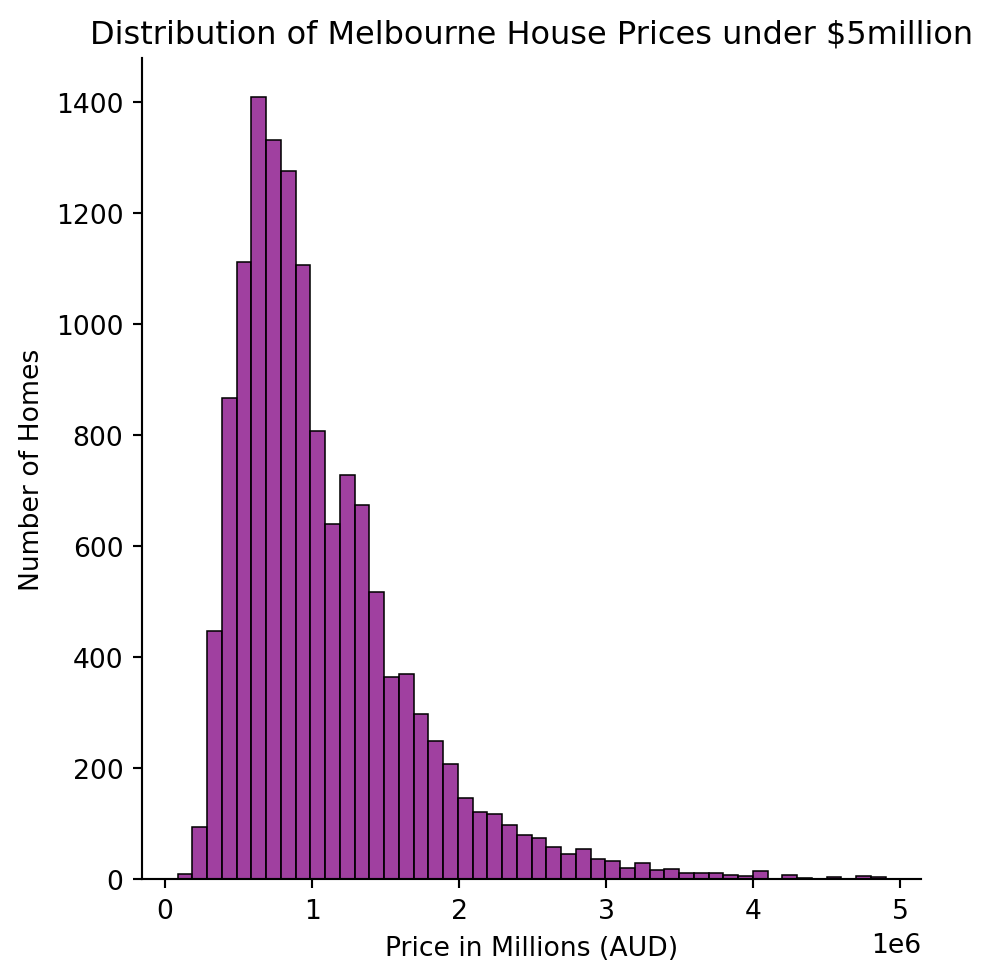
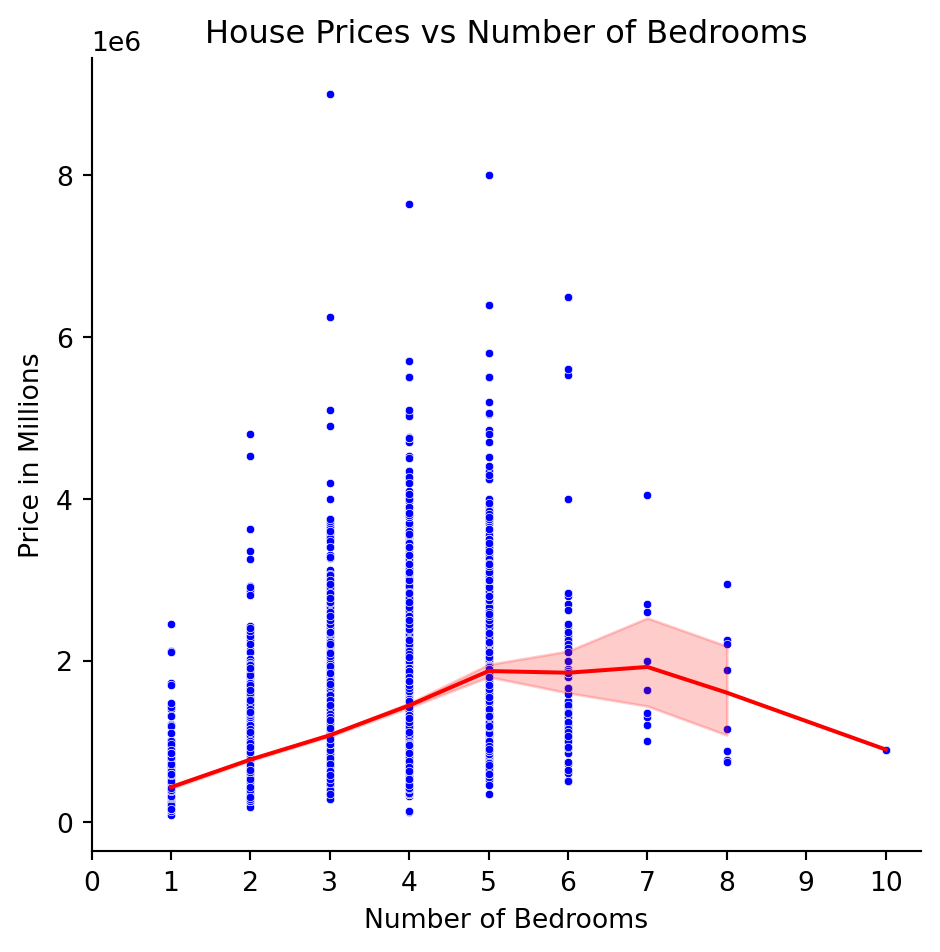

Code
import pandas as pd
df = pd.read_csv("../../../../data/melb_data.csv")Looking back at Melbourne House Prices 2016
Kelly Burrett
February 5, 2025
First, we import the dataset and the pandas library.
Here’s a glimpse at the data.
| Unnamed: 0 | Suburb | Address | Rooms | Type | Price | Method | SellerG | Date | Distance | ... | Bathroom | Car | Landsize | BuildingArea | YearBuilt | CouncilArea | Lattitude | Longtitude | Regionname | Propertycount | |
|---|---|---|---|---|---|---|---|---|---|---|---|---|---|---|---|---|---|---|---|---|---|
| 0 | 1 | Abbotsford | 85 Turner St | 2 | h | 1480000.0 | S | Biggin | 2016-12-03 | 2.5 | ... | 1 | 1.0 | 202 | NaN | NaN | Yarra | -37.7996 | 144.9984 | Northern Metropolitan | 4019 |
| 1 | 2 | Abbotsford | 25 Bloomburg St | 2 | h | 1035000.0 | S | Biggin | 2016-02-04 | 2.5 | ... | 1 | 0.0 | 156 | 79.0 | 1900.0 | Yarra | -37.8079 | 144.9934 | Northern Metropolitan | 4019 |
| 2 | 3 | Abbotsford | 5 Charles St | 3 | h | 1465000.0 | SP | Biggin | 2017-03-04 | 2.5 | ... | 2 | 0.0 | 134 | 150.0 | 1900.0 | Yarra | -37.8093 | 144.9944 | Northern Metropolitan | 4019 |
| 3 | 4 | Abbotsford | 40 Federation La | 3 | h | 850000.0 | PI | Biggin | 2017-03-04 | 2.5 | ... | 2 | 1.0 | 94 | NaN | NaN | Yarra | -37.7969 | 144.9969 | Northern Metropolitan | 4019 |
| 4 | 5 | Abbotsford | 55a Park St | 4 | h | 1600000.0 | VB | Nelson | 2016-06-04 | 2.5 | ... | 1 | 2.0 | 120 | 142.0 | 2014.0 | Yarra | -37.8072 | 144.9941 | Northern Metropolitan | 4019 |
| 5 | 6 | Abbotsford | 129 Charles St | 2 | h | 941000.0 | S | Jellis | 2016-05-07 | 2.5 | ... | 1 | 0.0 | 181 | NaN | NaN | Yarra | -37.8041 | 144.9953 | Northern Metropolitan | 4019 |
| 6 | 7 | Abbotsford | 124 Yarra St | 3 | h | 1876000.0 | S | Nelson | 2016-05-07 | 2.5 | ... | 2 | 0.0 | 245 | 210.0 | 1910.0 | Yarra | -37.8024 | 144.9993 | Northern Metropolitan | 4019 |
| 7 | 8 | Abbotsford | 98 Charles St | 2 | h | 1636000.0 | S | Nelson | 2016-10-08 | 2.5 | ... | 1 | 2.0 | 256 | 107.0 | 1890.0 | Yarra | -37.8060 | 144.9954 | Northern Metropolitan | 4019 |
| 8 | 9 | Abbotsford | 6/241 Nicholson St | 1 | u | 300000.0 | S | Biggin | 2016-10-08 | 2.5 | ... | 1 | 1.0 | 0 | NaN | NaN | Yarra | -37.8008 | 144.9973 | Northern Metropolitan | 4019 |
| 9 | 10 | Abbotsford | 10 Valiant St | 2 | h | 1097000.0 | S | Biggin | 2016-10-08 | 2.5 | ... | 1 | 2.0 | 220 | 75.0 | 1900.0 | Yarra | -37.8010 | 144.9989 | Northern Metropolitan | 4019 |
10 rows × 22 columns
The purpose of this graph was to show how many houses in Melbourne were sold for different prices. But the data varied from $85,0000 to over $10 million. The data was filtered to remove the upper outliers to better display the data.
Text(0.5, 1.0, 'Distribution of Melbourne House Prices under $5million')
This graph compares the sale price of Melbourne properties compared to the number of bedrooms.
#create a scatter graph, with a trend line, specifying range of x axis. Needed to change to relplot with default being scattor graph to add the line.
sns.relplot(df, x = "Rooms", y = "Price", s = 10, color = "blue")
sns.lineplot(df, x = "Rooms", y = "Price", color = "red")
plt.xticks(range (11))
plt.title("House Prices vs Number of Bedrooms")
plt.ylabel("Price in Millions")
plt.xlabel("Number of Bedrooms")Text(0.5, 9.066666666666652, 'Number of Bedrooms')